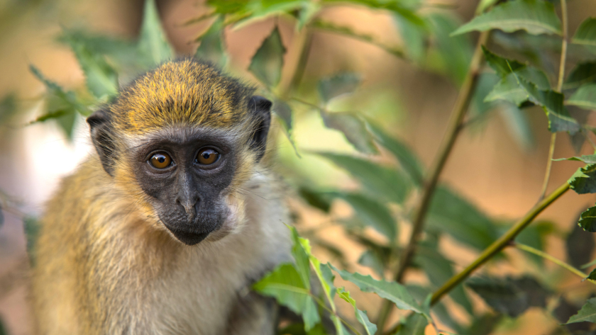
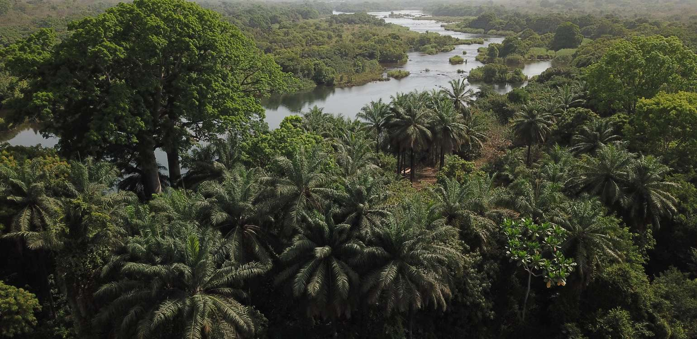
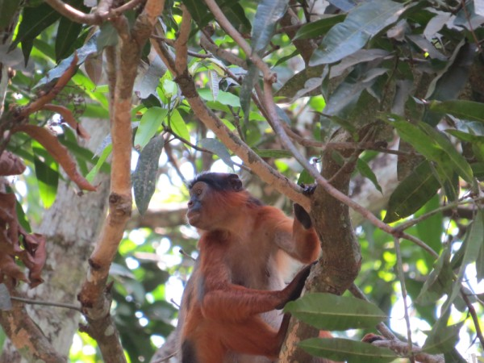

O Parque Nacional de Cantanhez é uma área protegida situada na região de Cubucaré, na área sudoeste da região administrativa de Tombali, na Guiné-Bissau.
Localização:
Cubucaré, Tombali, Guiné-Bissau
Dados:
Área
1.057.67 km2
Criação
2008 (18 anos)
Gestão
Instituto da Biodiversidade e das Áreas Protegidas da Guiné-Bissau
Coordenadas
11° 22' 58" N 14° 46' 12" O
No interior do Parque vivem aproximadamente 23.992 pessoas, distribuídas por 110 aldeias. Possui os troços mais bem preservados de floresta primitivas sub-húmidas do país, bem como savana, mangais, florestas e áreas agrícolas.
O elevado potencial ecológico desta área estava reconhecido desde o período colonial, razão pela qual, imediatamente após a independência, toda esta área foi integrada na Reserva de Caça de Cantanhez, onde os direitos de caça eram reduzidos dentro desta área.



Para além de diversa fauna, o parque Nacional de Cantanhez alberga 6 espécies de primatas:
Pan troglodytes verus (chimpanzé-ocidental) - as estimativas apontam para 376 a 2632 indivíduos;
Procolobus badius temminckii;
Colobus polykomos (macaco fidalgo);
Papio papio (babuíno);
Chlorocebus aethiops sabaeus (macaco do velho mundo);
Cercopithecus campbelli;
Galago senegalensis.
Estimam-se que vivam 400 primatas no parque.
Tem como fronteiras o rio Cacine e o Oceano Atlântico a sul, o rio Balana a norte, o rio Cumbinjã a oeste e a República da Guiné e o rio Cacine a este.